Bagger · Mobilbagger
Yanmar B7-6
- Echter Kurzheck-Bagger
- Arbeitet dicht an Wand und Schalung

Friedberg · Wetterau
Bagger, Radlader, Arbeitsbühnen, Anhänger und Stihl-Geräte - direkt ab Friedberg, persönlich erklärt.
Was brauchen Sie?
Mo-Fr7:00-12:00 & 13:00-16:30
Hotline06031 791 88 20
WhatsApp0177 333 8584
VertragshändlerYanmar & Stihl
Mietpark
Kategorie wählen, Gerät anfragen - wir melden uns mit Verfügbarkeit und Preis.
Bagger · Mobilbagger

Bagger · Kompaktbagger

Bagger · Kompaktbagger

Bagger · Anbauteil

Dumper · Dumper
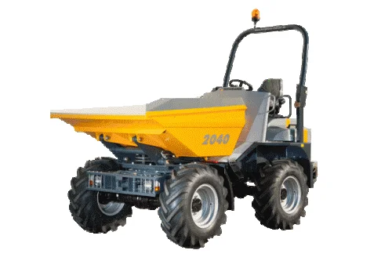
Dumper · Dumper

Radlader · Radlader
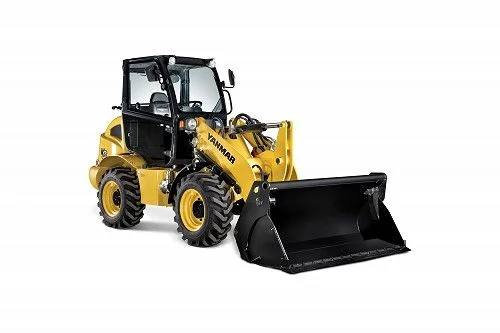
Radlader · Radlader
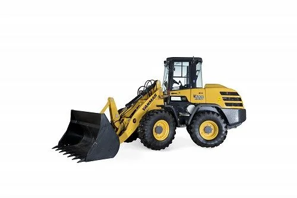
Radlader · Radlader
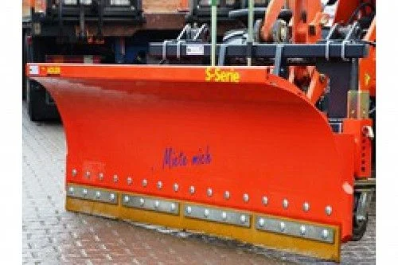
Radlader · Anbauteil

Arbeitsbühnen · Snake 2714
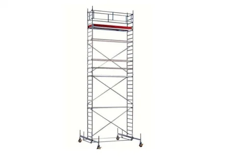
Arbeitsbühnen · Layher
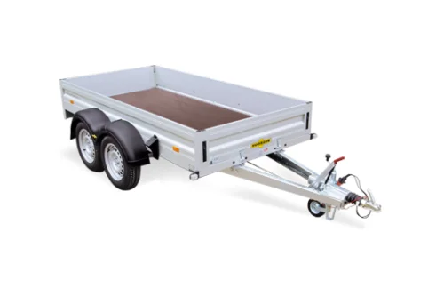
Anhänger · Humbaur
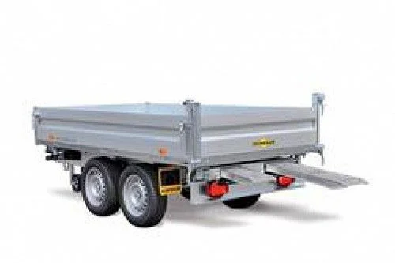
Anhänger · Humbaur

Anhänger · Humbaur
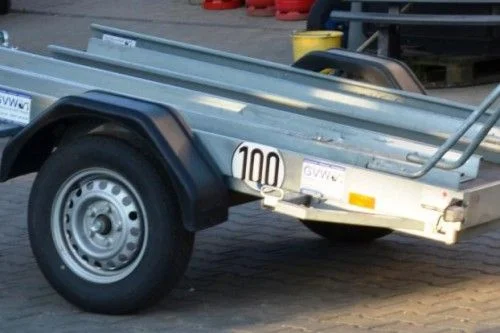
Anhänger · Humbaur

LKW & Kipper · Mercedes
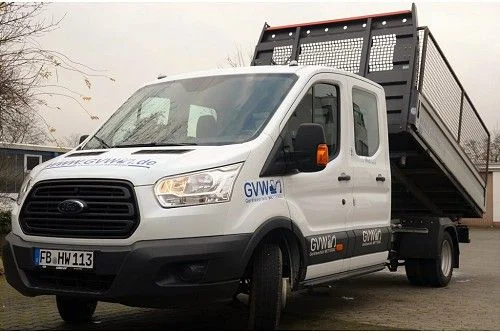
LKW & Kipper · Ford

Forst & Garten · Akku-Rasentrimmer

Forst & Garten · Heckenschere

Forst & Garten · Akku-Motorsäge

Forst & Garten · Akku-Laubbläser
Außerdem im Mietpark
Rund um Baustelle, Haus und Event - fragen Sie einfach nach.
Miet-Katalog ansehenKaufen · Vertragshändler
Langlebigkeit, Qualität und Wartungsfreundlichkeit kennzeichnen unsere Geräte. Beratung, Übergabe und Service kommen aus einer Hand - in Friedberg.

Minibagger
1,2 t Einsatzgewicht

Minibagger
1,0 t Einsatzgewicht

Minibagger
1,2 t Einsatzgewicht

Minibagger
1,7 t Einsatzgewicht

Kompaktbagger
2,7 t Einsatzgewicht

Kompaktbagger
2,7 t Einsatzgewicht

Stihl Vertragshändler
Akku-Motorsägen, Heckenscheren, Trimmer und Laubbläser - zum Mieten und zum Kaufen.
Stihl-Geräte ansehenJobs
Bewerbung an info@gvw.de oder telefonisch unter 0177 333 85 84.
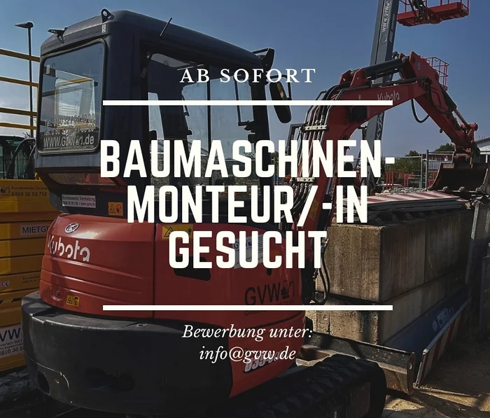
Ab sofort · Friedberg
Wartung und Reparatur unseres Mietparks - vom Minibagger bis zur Arbeitsbühne.
Jetzt bewerben →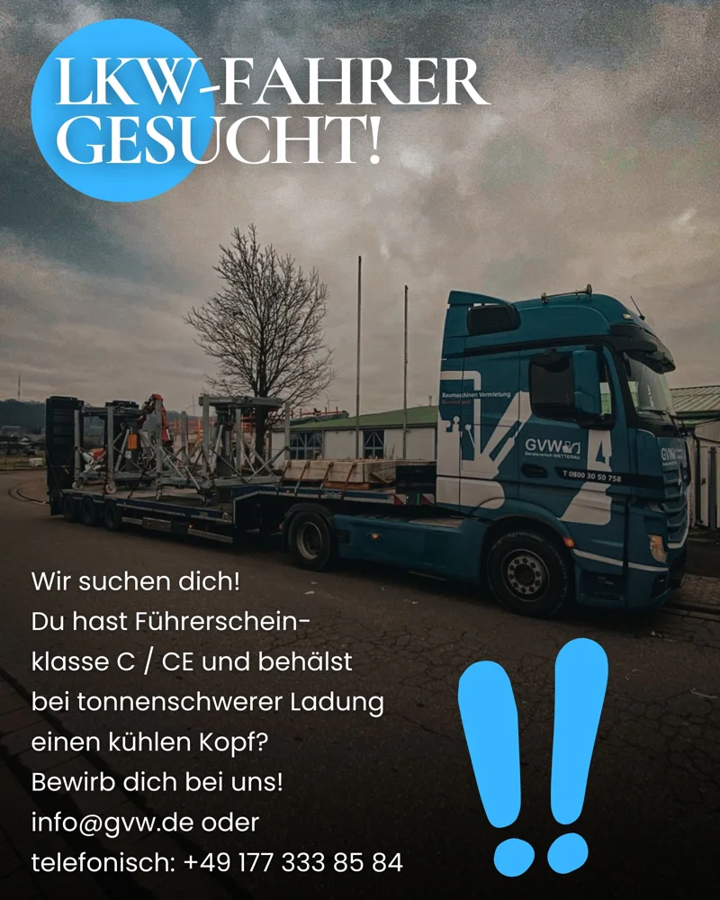
Führerschein C / CE
Du behältst bei tonnenschwerer Ladung einen kühlen Kopf? Dann bring unsere Maschinen auf die Baustelle.
Jetzt bewerben →Büro · Friedberg
Für Verkauf und Vertriebsinnendienst - Angebote, Kundenberatung und Mietabwicklung.
Jetzt bewerben →Unsere Marken & Partner


Google-Bewertungen
"Schnelle, einfache Auftragsabwicklung. Super gute Preise und freundliches Personal immer mit einem guten Rat."Uwe Preußner
"Hier miete ich gerne! Ein Anhänger per Telefon reserviert ... bei der Abholung vom Chef sehr freundlich begrüßt."Markus K.
"Wurde bestens beraten. Außerdem erhielt ich schnelle Hilfe bei einem Wasserschaden."Kundin aus Bad Nauheim
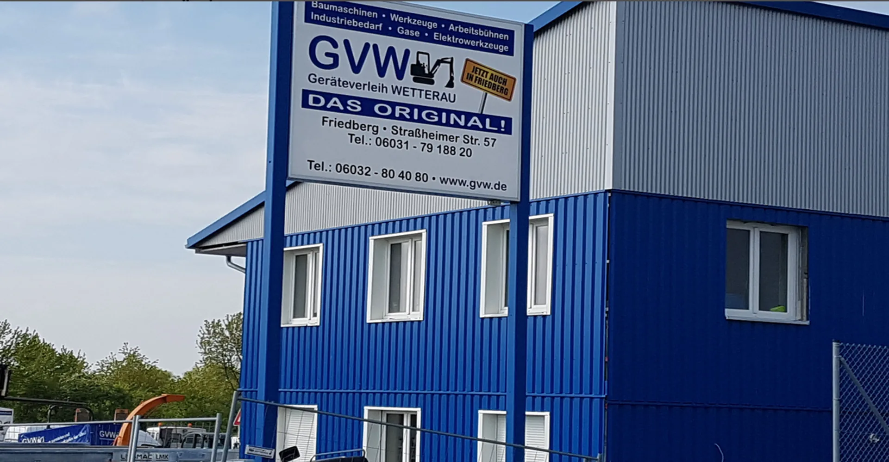
Kontakt
AdresseStraßheimer Straße 57
61169 Friedberg
ÖffnungszeitenMo-Fr 7:00-12:00
und 13:00-16:30 Uhr
Samstag geschlossen
WhatsApp0177 333 8584
E-Mailinfo@gvw.de